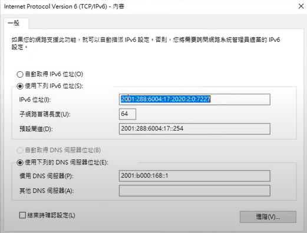
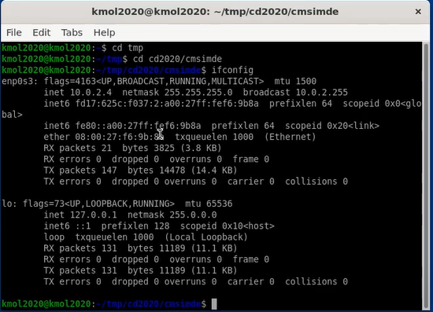

W6-W9 <<
Previous Next >> W15-W18
W10-W14
Week 10
第三組第三次直播會議
開會紀錄PDF連結:
https://drive.google.com/file/d/1AP49O_JYqgqQNDzEz7Pxj-tzjugL8Bb2/view
作業三:
根據對Topic2和Topic3的閱讀，使用CoppeliaSim、Webots、Onshape提出一個機電一體化項目。
Week 11
ssh to github
-
將SSH密鑰複製到剪貼板。
如果您的SSH密鑰文件的名稱與示例代碼的名稱不同，請修改文件名以匹配當前設置。複製密鑰時，請勿添加任何換行符或空格。
$ clip < ~/.ssh/id_rsa.pub
# Copies the contents of the id_rsa.pub file to your clipboard
2.在任何頁面的右上角，點擊您的個人資料照片，然後點擊設置。
3.在用戶設置邊欄中，點擊SSH和GPG密鑰。
4.單擊“ 新建SSH密鑰”或“ 添加SSH密鑰”。
5.在“標題”字段中，為新密鑰添加一個描述性標籤。例如，如果您使用的是個人Mac， 則可以將此鍵稱為“個人MacBook Air”。
6.將您的密鑰粘貼到“密鑰”字段中。
7.單擊添加SSH密鑰。
8.如果出現提示，請確認GitHub Enterprise密碼。
Week 12
IPV4 Ubuntu 對外連線
新增整體系統阜號，主機網路為NAT Network。
按下啟動，密碼 kmol2020，開啟 LXTermmial。
輸入ifconfig -> sudo apt install net-tools，密碼 kmol2020。
輸入ping 127.0.0.1測試，然後進入cd2020pj1->git pull。
輸入sudo vi wsgi.py編輯內容，按 i 編輯，近端的host 改為10.0.2.4。
按下esc後，輸入"wq" 儲存，開啟cd2020pj1.leo，在nav中搜尋"allowExt"。
新增 ttt檔，然後在tmp下sudo vi oauth_scrum.txt中輸入內容
輸入python3 wsgi.py 去啟動遠端。
前往網站https:/127.0.0.0.1.1.8443/alogin。
Week 13
IPv4 遠端控制設定
操作步驟:
1.在搜尋輸入cmd開啟命令窗。
2.輸入ipconfig來查看IPv4的IP。
3.將虛擬主機的整體系統埠號中的主機IP改為個人IPv4的IP。
4.啟動Ubuntu並開啟XLaunch.exe。
5.另一台主機開啟putty，並輸入遠端連線的IP。
6.設定SSH下的X11，將Enable X11 fowarding打勾並在X display location中輸入localhost:0.0。
7.存儲後再啟動即可連線到該主機，帳號及密碼輸入kmol2020。
8.輸入xterm&，並進入cd2020pj1。
9.git pull檢查版本，在進入docs及cmsimde。
10.輸入vi wsgi.py編輯(按i編輯)。
11.將近端的host改為10.0.2.4。
12.按Esc並輸入:wq存儲。
13.輸入python3 wsgi.py，網址為該主機IP加上17443(https://主機IP:17443)。
14.完成。
IPv6 遠端控制設定
操作步驟:
1.從老師倉儲下的downloads打開w13_ipv6_assignment.txt，內有ipv6遠端控制說明。
2.依照說明設定，設定IPv6網路。
3.點選IPv6內容，IPv6位址輸入2001:288:6004:17:2020:1::7121
4.子網路首碼長度輸入64、預設匝道輸入2001:288:6006:17::254。
5.接著開啟虛擬主機，設定整體系統埠號，將主機IP改為個人IP。
6.啟動Ubuntu輸入密碼kmol2020。
7.開啟LXTermial，並進入cd2020pj1。
8.git pull檢查有無新版本，cd docs/cmsimde。
9.輸入vi wsgi.py，將host改為個人主機IP(按i編輯，按Esc輸入:wq存儲)。
10.在另一台主機開啟putty，輸入預連線主機IP。
11.設定SSH下的X11(Enable X11 fowarding打勾並在X display location中輸入localhost:0.0)。
12.設定完成後存儲，在打開即可連線該主機。
13.輸入帳密kmol2020，打開XLaunch.exe並輸入xterm&啟動。
14.進入tmp/cd2020pj1/docs/cmsimde，輸入python3 wsgi.py開啟遠端。
15.網址為[該主機IP]:17443(必須關閉proxy)。
16.即完成遠端控制操作。


W6-W9 <<
Previous Next >> W15-W18